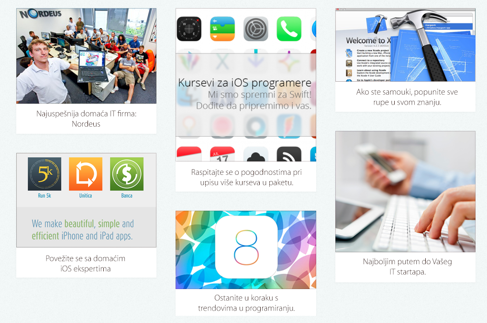
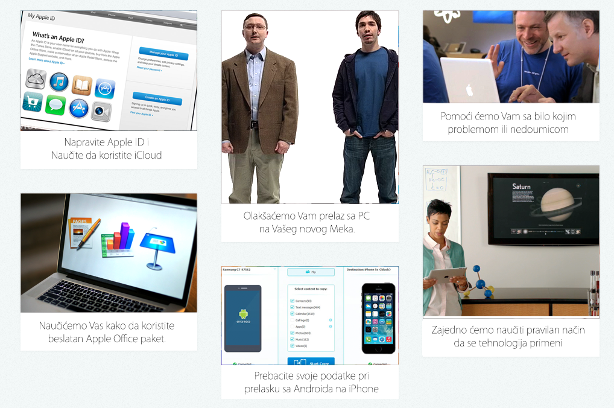
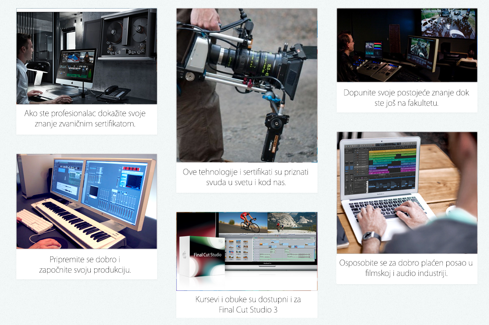
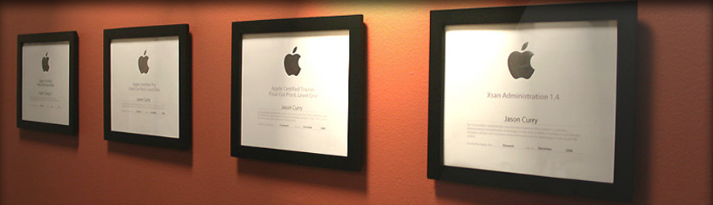
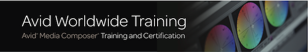

Dobrodošli u Crossover Trening Centar.
iOS Programiranje :: Video :: Audio :: AVID :: Apple IT
Bez obzira da li ste početnik, želite da poboljšate veštine u audio i video produkciji, ili ste dugogodišnji profesionalac prvi zvanični Apple i AVID Training Centar u Srbiji, nudi vam obuku i međunarodno priznatu sertifikaciju.
iOS 8 Programiranje
Zakoračite u svet programiranja za najpopulariju i najnapredniju mobilnu platformu na svetu. iOS je već godinama unazad ne samo najprivlačnija platforma za razvoj mobilnih aplikacija, već i naj isplativija. Apple je samo u prethodnoj godini isplatio iOS programerima preko 9 milijardi dolara.
iOS programeri su najtraženiji kadar u Srbiji, oni lako pronalaze izuzetno dobro plaćene poslove u velikim domaćim i stranim firmama, a često se odluče i da otvore svoj razvojni studio. Unapredite sebe i svoj posao, izgradite kredibilitet kod klijenata i poslodavaca, povećajte prisutnost i steknite reputaciju na konkurentnom tržištu uz naše programe obuke za iOS Developere.
| # | Uvod u Objective-C | Uvod u programiranje iOS8 aplikacija | Napredni Objective-C | Napredno programiranje iOS8 aplikacija | Dizajn iOS aplikacija |
| Šifra | OBC001 | IOP001 | OBC002 | IOP002 | DIO001 |
| Trajanje | 3 dana | 3 dana | 4 dana | 4 dana | 3 dana |
| Opis | Detaljan Opis | Detaljan Opis | Detaljan Opis | Detaljan Opis | Detaljan Opis |
| Cena | 400EUR + PDV | 400EUR + PDV | 550EUR + PDV | 550EUR + PDV | 400EUR + PDV |
Ukoliko polaznik upiše komplet kurseva OBC001 + IOP001 u trajanju od 6 dana, ostvaruje povlašćenu cenu od 650 EUR +PDV Svaki polaznik može da se prijavi za jedan kurs pojedinačno, ili za oba po povlašćenoj ceni. Obuke za programere su nam različitih nivoa tako da će te uz naše iskusne predavače naučiti da programirate bilo da ste neko ko tek ulazi u svet programiranja za iPhone i iPad ili ste veteran koji upisuje neki od naših naprednih programa.
Prijave i informacije o iOS kursevima: info@macola.rs1 na 1 - Lične obuke
Upoznavanje sa Vašim novim Mac računarom, iPad tabletom, iPhone telefonom ili iPod uređajem može biti traumatično iskustvo ako nemate prave savete. Naši strpljivi i stručni treneri će Vam pomoći da lako razumete sistem rada, i odgovoriće stručno ali i prijateljski na sva Vaša pitanja.
Nudimo Vam pomoć pri kreaciji AppleID naloga, naučićemo Vas kako da koristite Vaš novi uređaj, kako da prenesete svoje podatke sa starog PC ili Mac računara ili Android telefona na novi Mac ili iPhone. Ukoliko želite da naučite kako da uklopite svoj novi uređaj u radnu površinu (pri školovanju, sastancima, umetnosti) naši stručnjaci su pravi tim da Vas sasluša i pomogne Vam pri izboru najbolje opreme i naj efikasnijeg pristupa, kao i da Vam pomogne sa podešavanjem celog sistema.
Ovi treninzi traju kratko. 15 minuta do sat vremena. Savršen način da ne oduzmemo puno vremena od Vašeg dana, a da Vam ipak rešimo nedoumicu. Mi nismo pristalice jednokratnog rešavanja problema, već želimo da Vas naučimo jednom, kako biste Vi to znanje samostalno primenjivali nebrojeno puta.
Ako nikako da se izborite sa Vašim novim Macom, potrebna Vam je pomoć sa kreacijom i podešavanjem AppleID, imate bilo kakvo tehničko pitanje ili tek planirate prelazak sa PC na Vašeg novog Meka, 1 na 1 obuke su najbolji način da saznate kako. Mi ćemo Vam pomoći pri svakom koraku i pružiti Vam podršku i profesionalnost kakve nećete pronaći nigde drugde u Srbiji.
KontaktProfesionalne Audio i Video sertifikacije
Apple profesionalne aplikacije su industrijski standard za fotografe, montažere, dizajnere audio vizuelnih efekata i multimedijalne umetnike. Sertifikati su dostupni za Final Cut Pro, Logic Pro, i Motion.
Apple Certified Associate potvrđuje osnovni nivo znanja. Ovaj sertifikat je odgovarajući za studente, za nekoga ko se priprema za prvi posao ili fakultet ali i za svakoga ko je zainteresovan za sertifikat o osnovnom poznavanju aplikacije. Pogledajte detaljan program
Apple Certified Pro - Level One pokazuje suštinsko operativno poznavanje aplikacije. Level One ispiti održavaju se na kraju odgovarajućeg trodnevnog kursa i polažu se u prostorijama Apple Authorized Training Centra (AATC). Upoznajte osnove aplikacije i naučite funkcije korisničkog interfejsa. Ovaj kurs je namenjen onima koji nemaju početno znanje ali i onima koji žene da ponove i dopune svoje znanje rada.
PDF sa detaljima Final Cut Pro X 101 kursa
PDF sa detaljima Logic Pro X 101 kursa
PDF sa detaljima Motion 101 Compositing kursa
Apple Certified Pro - Level Two svedoči o dubokom razumevanju i majstorskom poznavanju naprednih funkcija aplikacije. Level Two ispiti mogu se polagati samo nakon uspešno položenog Level One ispita. Ovo je sveobuhvatni petodnevni kurs. Neučite praktične tehnike montaže koristeći realne primere. Ovaj kurs je osmišljen za one koji imaju radno znanje u FCPX ili Logic Pro aplikaciji.
PDF fajl sa detaljima kursa FCP X Advanced 300
Literatura za pripremu ispita
Za Final Cut Studio 3 kurseve se raspitajte na info@macola.rs
- Unapredite sebe i svoj posao
- Steknite priznanje za tehničku kompetentnost
- Izgradite kredibilitet kod klijenata i poslodavaca
- Povećajte prisutnost i steknite reputaciju na konkurentnom tržištu
- Objavite sertifikate na Apple Certified Professionals Registry
- Prikažite svoj personalizovani sertifikat i logotip koji vas ističe kao Apple Sertifikovanog Profesionalca
Apple IT Sertifikati
Apple OS X sertifikati su osmišljeni za IT profesionalce koji žele da uključe Mac u Windows mrežu računara, nude podršku za OS X u poslovnom ili edukacijskom okruženju, održavaju sisteme OS X sistema u organizaciji ili održavaju kompleksne multi platformske sisteme. Dakle učitelji, agenti podrške, IT specijalisti, mrežni administratori, tehničari, administratori servera.
OS X Support Essentials trodnevni hands-on kurs na kome se detaljno istražuje rešavanje problema na Mac OS X. Ovo je kurs generalne primene.
Pogledajte detaljan program
Priprema za polaganje sertifikacionog ispita
Mac Integration Basics kurs za mrežne administratore koji žele integrisati Mac računare u već postojeću mrežu Windows računara ili drugu standardnu mrežu.
Pogledajte detaljan program
Priprema za polaganje sertifikacionog ispita
OS X Support Essentials trodnevni hands-on kurs na kome se detaljno istražuje rešavanje problema na Mac OS X. Ovo je kurs generalne primene.
Pogledajte detaljan program
Priprema za polaganje sertifikacionog ispita
AVID Training Partner Program
Osnovne veštine i radni procesi Novi nastavni plan za Media Composer se zasniva na dvadesetogodišnjem iskustvu treninga najboljih u poslu. Predavači svih kurseva su Avid Certified instruktori koji koriste primere iz svakodnevnog realnog posla. Naučićete principe i veštine koje su vam potrebni da udahnete život vašim idejama.
Montaža i finalizacija projekata u SD i HD formatu
Kreiranje jednostavnih i kompleksnih kompoziting efekata
Finalizacija sekvenci različitim tehnikama korekcije slike i tona
Unos i montaža sa najnovijim file-based formatima kao što su: RED, Sony XDCAM i AVCHD
Sertifikovani Korisnik Avid Media Composer Certified korisnik pokazuje čvrsto znanje osnovnih veština, radnih procesa i koncepta nelinearne montaže na Avid Media Composer-u. Ispit pokriva gradivo iz Introduction to Avid Media Composer petodnevnog kursa (ili ekvivalentno iskustvo stečeno radom u aplikaciji)
Sertifikovani Ekspert Avid Media Composer Certified Expert demonstrira kompletno poznavanje Media Composer sistema uključujući i napredne alate i radne procese koji se koriste prilikom kreiranja profesionalnog programa. Ispit za Eksperta pokriva gradivo iz kurseva Editing Tools & Techniques, Effects Tools & Techniques, Basic Color Correction kao i iskustvo stečeno radom na realnim projektima.
Avid Training Partner program će omogućiti studentima, profesorima i profesionalcima da sa još jednom svetski priznatom licencom i sertifikatom unaprede svoj kurikulum i karijeru.
Danas, više nego ikada, potrebno je imati potvrde o kvalifikacijama za svoju stručnost i biti iznad konkurencije. Avid sertifikcacija će obezbediti priznati standard i najbolji je način da predstavite svoju profesionalnu izuzetnost. Avid sertifikacija je u industriji priznata akreditacija koja vam može pomoći da unapredite svoju karijeru.
Bolji trening znači bolje prilike Oficijelni Avid Media Composer trening otvara vrata nebrojenim kreativnim prilikama. Dobijanjem sertifikata pridružićete se društvu montažera baš kao što ste vi, gde ćete dobit savet, čuti primere iz realnih projekata, proširiti lična i profesionalna poznanstva.
Posavetujte se sa trenerom